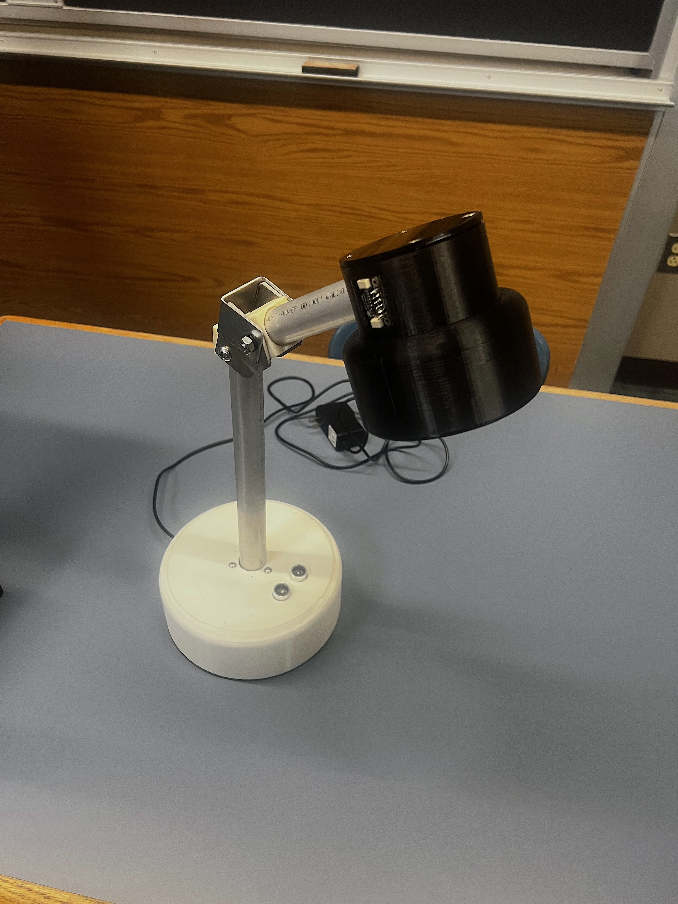
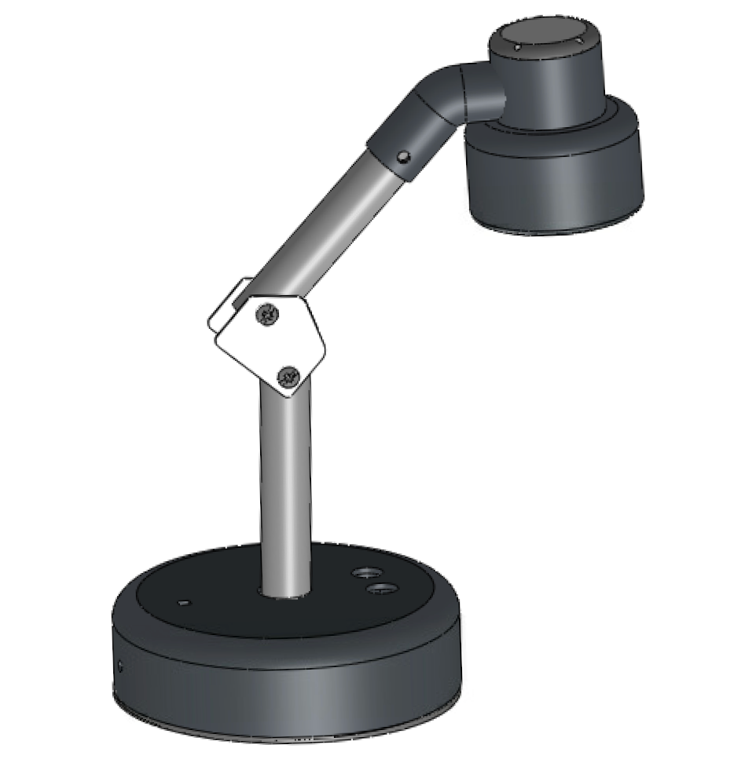
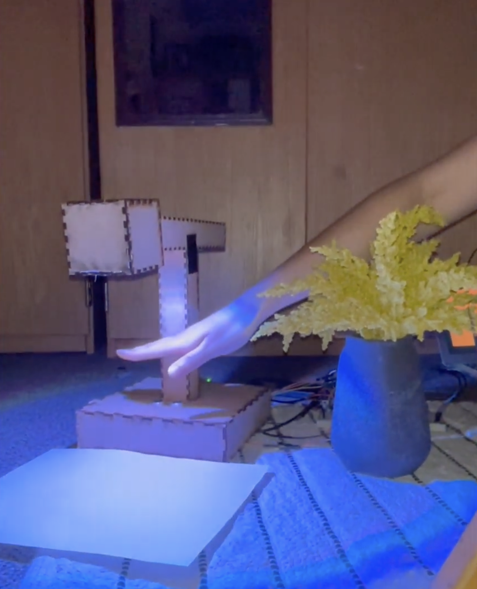
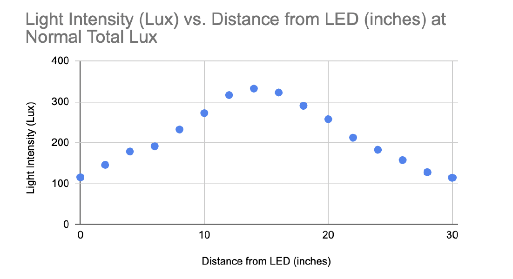
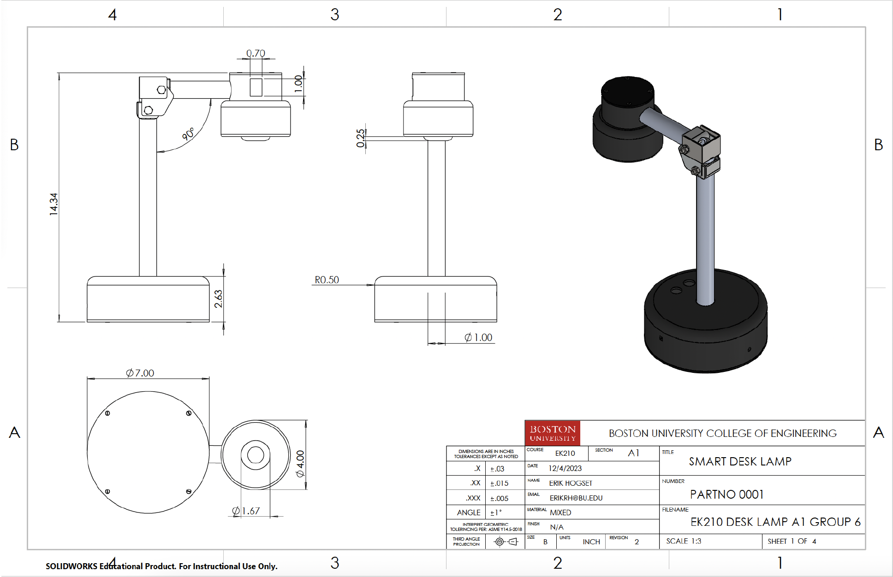
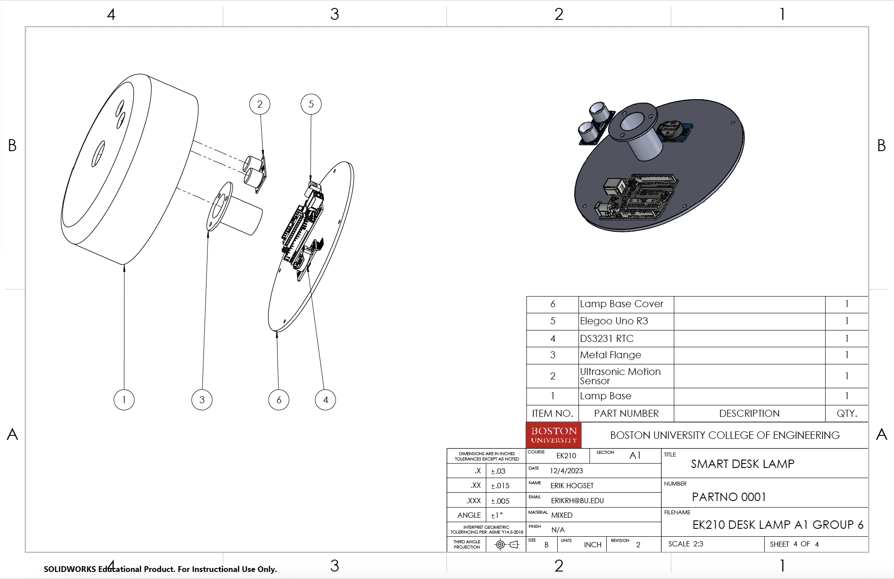
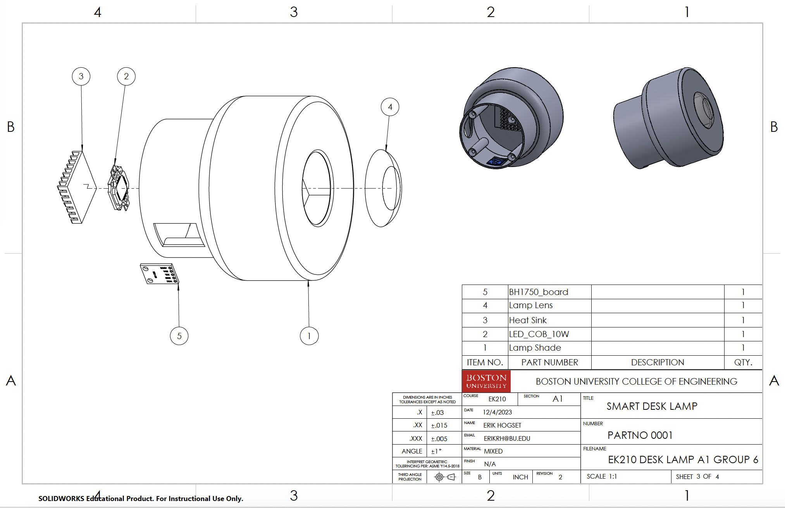

Smart Desk Lamp
A sensor-driven desk lamp prototype designed to improve accessibility, adjust brightness automatically, and reduce blue-light exposure over the course of the day.
Prototype Demonstration
This prototype was developed as a smart desk lamp that adapts to both the user and the surrounding environment.
- Ultrasonic sensor: detects a hand wave and cycles through the lamp’s operating modes.
- Five modes: dim, normal, bright, automatic brightness, and off.
- Ambient light sensor: adjusts output automatically in auto mode based on room brightness.
- Real-time clock: reduces blue-light output over the course of the day for warmer evening lighting.
- Adjustable head: allows the lamp to be repositioned manually with low effort.
The final system combines physical product design with sensing and control logic to create a more accessible and adaptive lighting experience.
Project Overview
The goal of this project was to design a desk lamp that was easier to use and better suited to a user’s environment than a standard manually operated lamp. Instead of relying only on switches or fixed brightness settings, the lamp uses sensing and control logic to respond dynamically to user input, room brightness, and time of day.
The design focused on improving accessibility for users with limited dexterity, providing automatic brightness adjustment, and reducing blue-light exposure later in the day. These goals shaped both the physical design of the lamp and the logic used to control its output.
What the Lamp Does
User Interaction
- Waving a hand over the sensor changes lamp mode
- Modes cycle through dim, normal, bright, automatic, and off
- Designed to reduce reliance on small manual controls
- Lamp head can be repositioned with minimal force
Adaptive Lighting
- Ambient light sensor adjusts output automatically in auto mode
- Brightness levels correspond to dim, normal, and bright desk lighting targets
- Real-time clock gradually lowers blue-light percentage later in the day
- System balances usability, visibility, and comfort
Final Product
This image shows the completed smart lamp prototype, including the final housing, adjustable head, and integrated sensing system.


Prototype Development
Earlier iterations focused on validating the lamp concept, sensor response, and overall interaction before arriving at the final integrated design.


Mechanical & Product Design
The lamp was developed as a functional product rather than only an electronics demonstration. The design integrated a stable base, vertical support structure, adjustable head, and internal space for sensing and control hardware.




Technical Summary
Hardware
- Ultrasonic motion sensor
- Ambient light sensor
- Real-time clock
- Microcontroller-based control system
- LED lighting output
- Adjustable mechanical lamp head
Design Goals
- Improve usability for people with limited dexterity
- Provide multiple brightness settings
- Adapt automatically to room brightness
- Reduce blue-light exposure later in the day
- Maintain a stable, adjustable physical form